Fushimi Castle
Neuschwanstein Castle
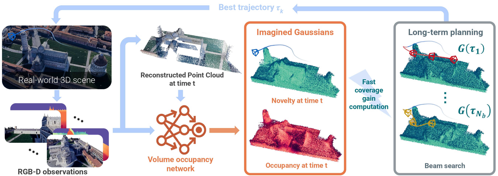
Long-term planning involves evaluating numerous candidate cameras, which motivates the introduction of Imagined Gaussians.
Predicting the coverage gain of a given camera is non-trivial, it requires evaluating three key properties for each point in its FoV:
Indeed, we need to predict the occupancy and visibility of every point, then integrate over the entire field of view.
Too complex, too slow...
Wait, doesn't this formula look strangely familiar? Like volumetric rendering?
Aha! They share the same mathematical structure!
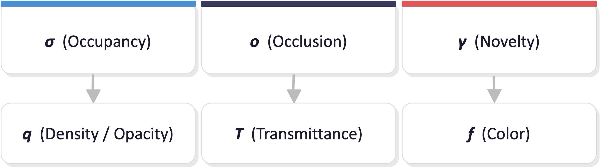
By training only a lightweight occupancy model, we can leverage the 3DGS renderer for fast coverage gain computation by predicting an occupancy field and converting it into Gaussians.
We call this representation Imagined Gaussians.
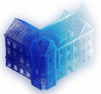
Occupancy Field
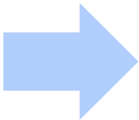
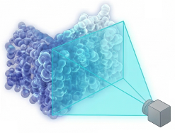
Imagined Gaussians
Rendered Novelty Map
Then the process of evaluating a camera pose can be simplified to predicting an occupancy field, converting it into Imagined Gaussians, and then summing over the rendered pixels to instantly obtain the total coverage gain.
❗ ~30x faster than original \(G(\mathbf{c})\) estimation!
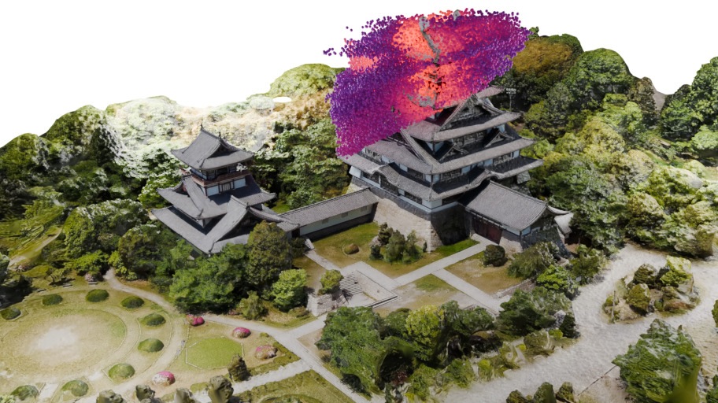
Imagined Gaussians at \(t_0\)
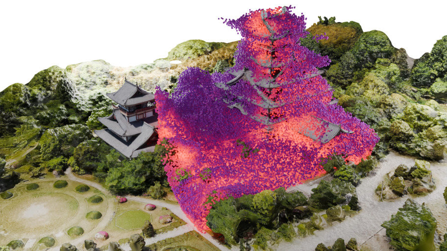
Imagined Gaussians at \(t_1 > t_0\)
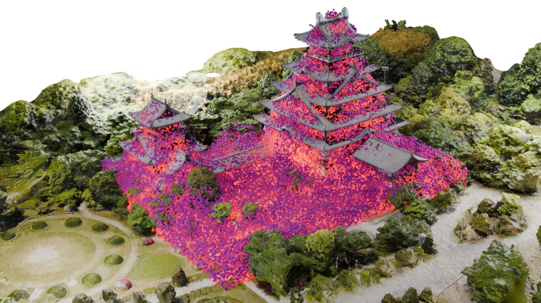
Imagined Gaussians at \(t_2 > t_1\)
Evolution of Imagined Gaussians Compared with Ground Truth Mesh. The brighter the Gaussians, the higher their predicted occupancy. As exploration progresses (from left to right), our Imagined Gaussians increasingly align with the ground truth mesh, demonstrating improved environmental modeling.
We uses beam search to efficiently explore the space of candidate trajectories and select the one with the highest expected coverage gain. The agent then executes the first \(N_f\) actions before replanning. For ablation studies on the planning phase, please refer to the main paper.
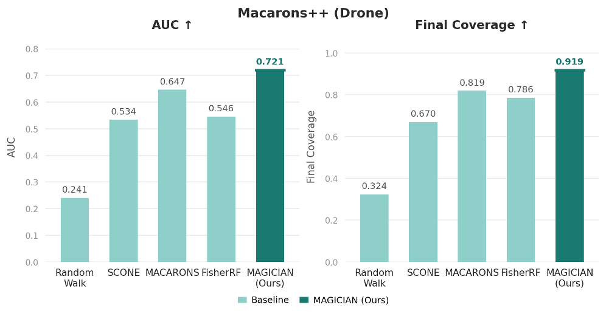
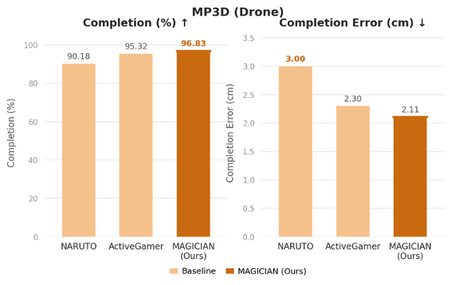
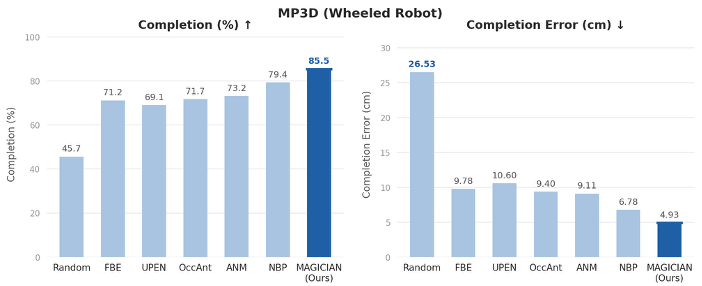
MAGICIAN achieves state-of-the-art performance across diverse robot platforms and both indoor and outdoor environments.
Pisa Cathedral
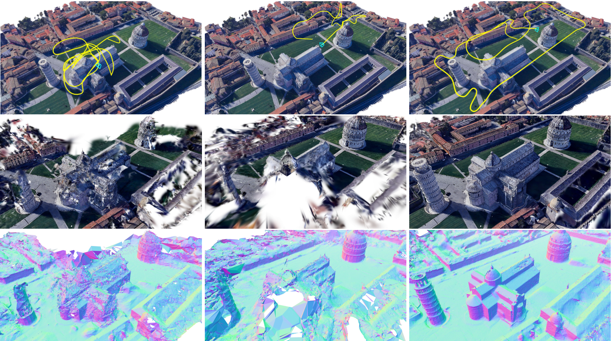
Barts
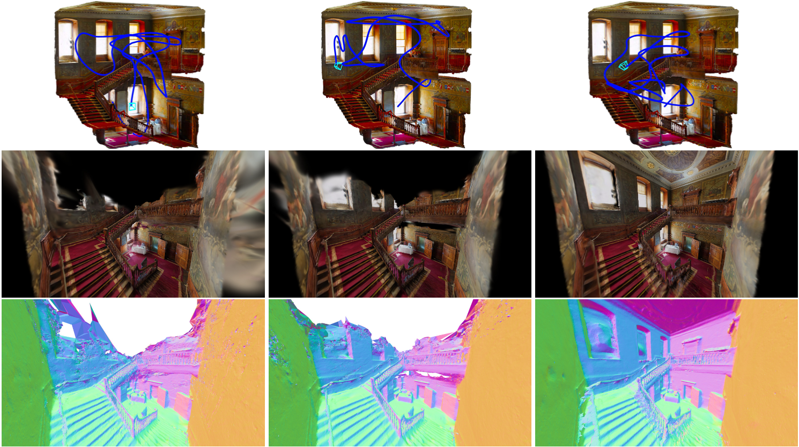
Previous state of the art
MAGICIAN
Our long-term planning is more efficient and achieves more comprehensive exploration compared to short-sighted planning approaches.
|
Inspired from awesome webpage template
|